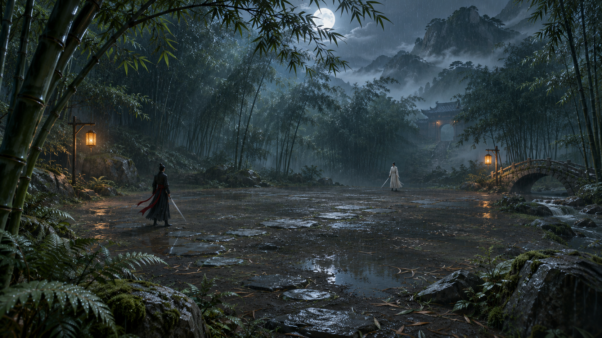
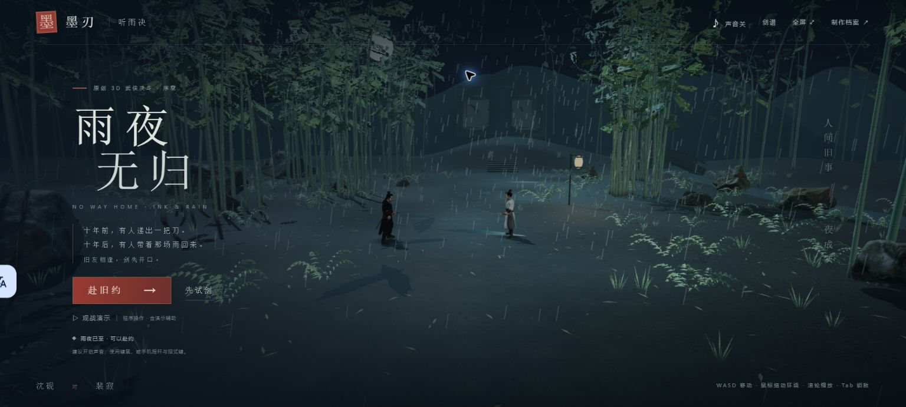
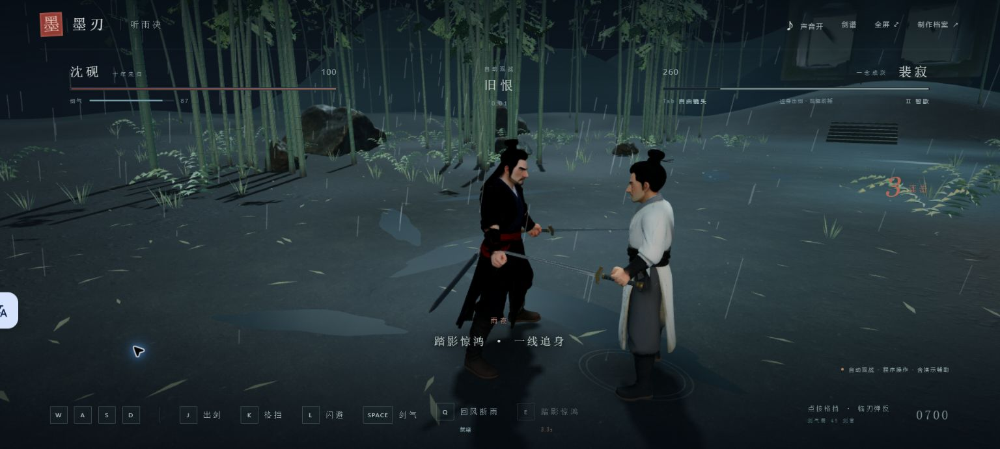
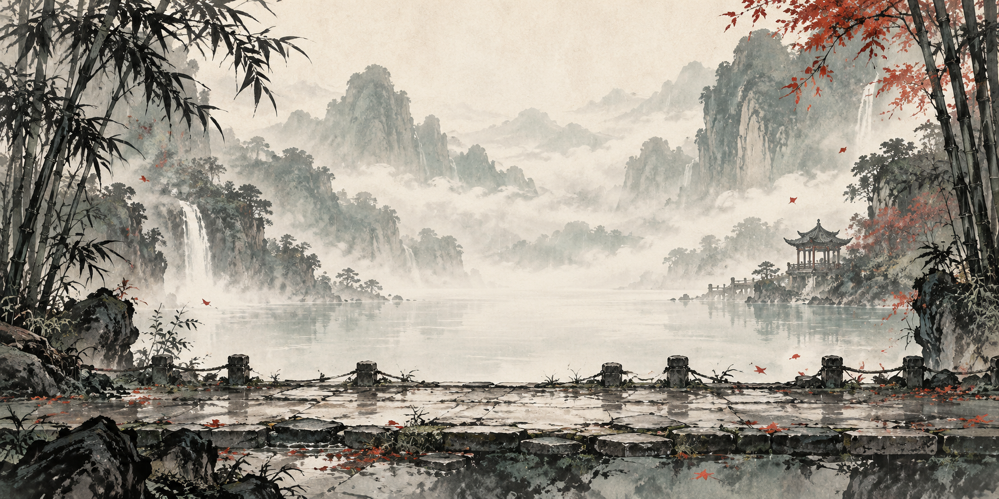
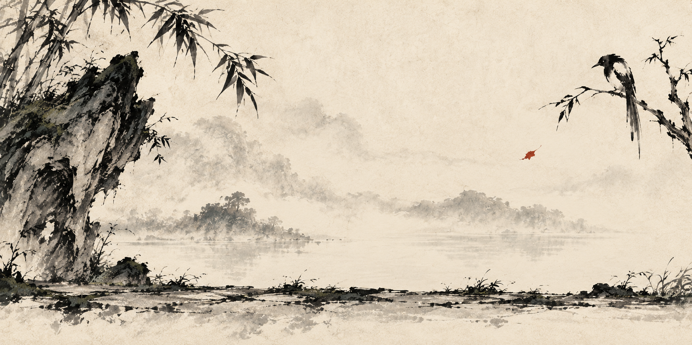
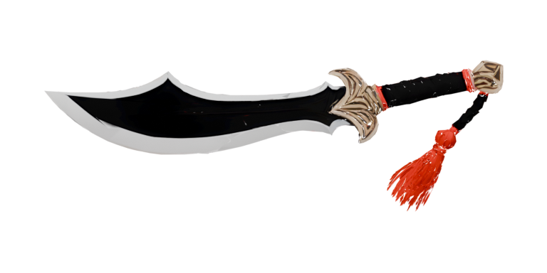

人的目标 → 可验证交付
从游戏想法，到可试玩的成品要求
用户要求武侠水墨打斗游戏、可分享网页、PDF 和录屏，并展示人机协作、第一性原理与对抗审查。团队先收敛为可闭环的单人剑斗，再根据真实反馈调整方向。
本步留下的证据
- 单人网页 Demo 的明确交付目标
- 练习、挑战、观战、暂停和结算的功能范围
- 录屏与本档案用于回看制作过程
用户复验后继续改进。V4成功项作为发展史保留，V5动作与新入口按同版本检查，保留未解决的观感边界。
默认行走 1.5；可见「奔跑」按钮切换到 3.6；Shift 或摇杆外圈临时冲刺 5.2。松开临时加速不关闭奔跑模式。跳跃、蹲身始终可见。
展开「跳击／蹲击」，直接调用起跳接空击或短蹲接低扫；R 后 J、C 后 J 保留。可用状态与恢复时间来自实际动作，普攻三段及 Q／E 等入口完整列入剑谱。
画质入口已连接实际设置。自动按运行情况调整；清晰侧重细节，流畅降低绘制负担。显示帧率仍以实际设备与场景为准。
动作根因涉及基准双踝站距（约 0.668 对来源动作的 0.178）与步频和位移不匹配。已做宽站纠偏、实际位移驱动相位与有限支撑脚修正。真实 Chrome 核对默认行走 1.5、可见奔跑 3.6、Shift 冲刺约 5.197；行走与冲刺选定采样约 46／47 fps。仍有有限滑步和轻弹，不宣称零滑步、全姿态自然或电影级品质。
| 本机 Chrome 采样 | 观察结果 | 适用边界 |
|---|---|---|
| 先前基线记录 | 像素比 1，约 33–34 fps | Intel 核显；不同窗口状态与录制条件分别记录，不作为同一基准或手机性能，不承诺稳定 60 fps。 |
| 先前自动设置记录 | 像素比 0.75，约 44–47 fps | |
| 最终真实前台录屏 | 像素比 0.75，约 39 fps |
真实 Chrome 已验证可见奔跑开关，原生按住 S 时速度约 3.6、Jog 动作；该时刻约 47 fps，自动画质为 0.75。390 × 844 模拟手机尺寸下，点「踏空斩」约 250 毫秒时离地 0.84 米并播放空击，约 1 秒落地；点「潜身扫」约 300 毫秒时为蹲姿与低扫有效阶段。新版横竖屏控件均已检查，22 项合成指针检查通过。真实手机仍未验收，脚步仍有有限滑动与轻弹。
陪练反例已闭环：曾经停看新按钮约 26 秒就被追击至败北；修订后，实际 Chrome 连续 125 游戏秒／约 124.5 秒墙钟不出招，双方生命保持 100／500，反击计时为零。随后使用跳击、蹲击触发反击，玩家降至 70；停止出招后未继续掉血，也没有回血。规则为平时退让，出招或命中后反击 3 秒；剧情实战与程序观战保持原样。
画质切换已在实际 Chrome 回读：本机「清晰」为 1.25，「流畅」为 0.8，「自动」切回时为 1.0。该记录验证设置生效，受设备与自动调整影响；不承诺所有设备相同数值或稳定 60 fps。
本轮实机 Q 已播放身体旋斩；手动招式测试整段使对手生命从 500 到 343。跳击与蹲击规则分别为 32／20 伤害。完整程序观战约 11 秒胜利、剩余 40 生命，包含演示辅助，只证明该演示终局可达。27 项业务检查与这些实际操作分别记录。
本次交付采用 V5 动作修订。打开公开试玩入口 ↗；部署记录随交付保存。
以下是本次生成的美术目标图，不是游戏实机截图。真正的三维场景按此重新布置，并与下方本轮 Chrome 实景分开对照。

V4 当前制作：可走竹林山路扩大为约 36 × 42 米，中央约 12 × 9 米留作交手净空。实际接入 Poly Haven CC0 扫描苔石和草径地表，密竹与石簇提供绕行边界；远处溪桥、暖灯与山门作为景深。首轮 Chrome 截图暴露了过亮光带与景物位置问题；调整后的宽屏菜单已不再出现该光圈，竹林纵深可见。局部灯火与山门轮廓调整已进入本轮实机。可走世界为 36 × 42 米，含 23 个竹群、岩石与灯柱碰撞体；下方逐项列出本轮操作、响应式和性能的真实边界。
当前双侠：沈砚与裴寂均为详细成年比例的原创角色。已回读两份实际 GLB，各含 18 根骨骼、18 段动作、918 个动画通道；UAL1 Standard 提供 12 段，UAL2 Standard 提供 6 段，来源均为 CC0。Idle 保留为备用，当前挺身持剑待机采用程序姿态。本轮 Chrome 已实际验证 R 跳跃接 J 空击，以及 C 蹲身接 J 蹲击。角色肩袖涉及 2,361 个源顶点的权重已平滑，新抬臂实录帧中原先的齿状边缘得到改善；不将这一帧外推为全姿态零穿模。
新剑已在 Blender 制作并导出：复用 Poly Haven Antique Estoc 的 CC0 刃面与 PBR 磨损，中式短护手、暗色握柄、交叉缠绳及剑首重新制作。文件和刃面几何已核对，本轮实机近景已显示新剑与详细双侠；持续动作中的衣袖和全部姿态质量仍保留真实边界。
手机入口已改为左拇指模拟摇杆与右侧招式，推满摇杆奔跑；另设跳跃、按住蹲身与单指镜头操作区。16 项指针事件模拟检查通过，涵盖多指归属、取消、失焦和暂停释放。Chrome 已检查 390 × 844 竖屏及 844 × 390 模拟触屏横屏截图：摇杆、跳蹲、招式和暂停等入口完整可见，字幕未遮挡按钮。此证据只覆盖响应式与模拟指针布局，真实手机多指操作和性能仍未验收。
自动观战由程序操作，含低血量缓慢恢复的演示辅助，用于呈现完整流程。其胜利不作为真人难度或平衡结论；最终游戏视频将区分实际键盘操作与观战整场。
声音素材：18 个实际 CC0 文件已进入项目，包括 Kenney 的挥刃、脚步与碰撞音，Ylmir 雨声及 Luke.RUSTLTD 风声。循环接缝和音量已整理；本轮 Chrome 回读 18 个音频资源已加载、失败项为 0。资源状态不代表所有播放设备与听感都已验证。
两张原始截图按原像素复制。概念目标、建模预览和实际网页画面分别标识。

36 × 42 米可走范围，中央交手净空与林间绕行路径；远处溪桥和高位山门用于景深。

本帧来自程序观战，含演示辅助；不将自动完成一局作为真人难度与平衡结论。
先前成功不自动继承。模型、渲染、动作、双人决斗与终局分别重新验收。
十年前师门在雨夜焚毁。沈砚追寻当年递刀的裴寂，背叛或保护的真相尚未揭开。开场三句可跳过，结尾留有第二盏灯的悬念，均为本次原创。
新引擎使用 WebGL 与三维模型加载流程，界面改为满屏雨夜、双角色生命条与电影字幕。资源未就绪时禁用开始；失败时显示错误，不用占位人物冒充成功。
真实 Chrome 已确认 18 骨骼角色资源加载、10 个环境素材加载、Q/E 触发与恢复、三段剧情进入战斗、失败结算与暂停。移动端、完整胜利终局和分享访问仍按独立条目核验。
本页区分当前 3D 浏览器证据、数学／业务检查与历史 2D 证据。当前验证结果集中在“验收”一节；历史成功不自动继承。
用户继续要求调动真实素材与已有工具。新增内容以独立证据记录，不沿用旧版验收。
Q「回风断雨」为近身回旋攻击，恢复时间 8 秒；E「踏影惊鸿」为向对手突进刺击，恢复时间 5 秒。界面展示实时恢复时间，并提供触屏入口。业务检查包含暂停时计时冻结与突进接触停止；真实 Chrome 已确认触发和恢复显示。E 的方向修正仍待本次回归；真人手感不由业务检查替代。
已核读 Kenney Nature Kit 与 Castle Kit 的 CC0 许可证，复制 9 个真实 GLB 和依赖贴图，用于岩壁、松林、石桥和低城墙。材质调为墨青，重复物件采用实例化；原始素材未改动，真实 Chrome 已回读当前 10 个环境资产加载完成、无失败项。
混元生成山门，经 Blender 清理并导出为 14,000 三角面、内嵌 1024 贴图的资产。实际顶点测得高度 6 米，场景中按 7.5 米放置在原亭后侧岩台。此资产单独标记，不冒称 Kenney CC0 素材。
当前扩展的是可见山谷纵深：近岩、中桥、远山与雾中灯点。活动范围仍是双人决斗场地，外围景观不构成可探索开放世界的承诺。
| 新增项 | 已取得证据 | 待确认 |
|---|---|---|
| Q / E 招式 | 业务检查覆盖伤害、8 / 5 秒恢复、暂停冻结和突进接触停止；Chrome 已确认 Q/E 触发与恢复显示。 | E 方向修正的本次回归；触屏真机和真人难度。 |
| 环境素材 | 9 个开源 GLB 加 1 个本次生成山门；Chrome 回读 10 个环境资产全部加载、无失败项。 | 更广泛设备上的帧率、画面遮挡与景深表现。 |
| 生成山门 | GLB 实际顶点范围约 8.895 × 6 × 8.527 米；嵌入贴图，独立来源记录。 | 与远桥、原亭和人物的实际画面关系。 |
| 人物骨骼与握剑 | 18 骨骼角色资源已在 Chrome 加载；握剑挂点数学独审误差小于 10⁻¹⁵。 | 衣料零穿模、全部动作质量与真人观感仍未验收。 |
素材记录：来源与许可说明 ↗ · Nature 原许可证 ↗ · Castle 原许可证 ↗。山门为本次生成资产，许可来源与 Kenney 分开。
制作档案 / V5 动作修订 · V4 历史保留 · 2026.11.02
人决定值得做什么，提出审美判断；AI 拆解任务、制作与检查。用能玩的成品和可追溯的修正，展示这一次协作。
第一性原理不是口号，而是删去无关范围，留下能被试玩检验的核心假设。
敌人攻击要有前摇、命中与收招。玩家必须能从画面读出危险，而不是只看到生命突然减少。
出剑、点按格挡、闪避与剑气构成选择。只连续攻击就无伤通关，会使其他选择失去意义。
剑光、墨迹、短暂停顿、声音与数值反馈共同确认命中；失误后有重试，成功后有结算。
背景思考来自经授权查阅的《论艺术矛盾与游戏》：把“制造与解决矛盾”“降低入门门槛、提高剧情和技战术上限”转化为本作设计假设。此处为脱敏概念归纳，不公开个人知识库全文。
观察 → 假设 → 制作 → 验证 → 修正。遇到反例就回到上一环，直到问题有明确结果或标为未验证。
人的目标 → 可验证交付
用户要求武侠水墨打斗游戏、可分享网页、PDF 和录屏，并展示人机协作、第一性原理与对抗审查。团队先收敛为可闭环的单人剑斗，再根据真实反馈调整方向。
主代理统筹、引擎代理、界面代理与独立审查代理协作。职责不等同于代理数量；音频由引擎职责兼任。
查资料、拆解目标、原创故事、整合资产、整理交付与验证边界。
战斗状态、敌人行为、命中判定、暂停、结算与针对反例的仿真。
水墨背景迭代、Blender 飞刃资产、角色与剑光、网页布局和操作入口。
程序合成短促打击音，提供声音开关，浏览器内按用户操作启用。
主动寻找无效玩法与输入反例，区分仿真通过和真实浏览器证据。
用户定义目标、调用已有能力，并直接指出首版美术“呆板”。这条反馈改变了后续背景设计，而不是只被记录成一句好评。
借鉴经典水墨动画的气韵、八大山人的疏淡与留白；人物、故事和资产为本次原创表达，不复制既有 IP 角色或台词。

技术上能显示并不代表审美已通过。用户的直观判断成为下一轮修改的输入。

减少密集的景物堆叠，调整虚实与空间节奏，使人物与招式更容易从画面中读出。

资产链路 · 已完成
通过 Blender 4.5.14 MCP，使用混元生成原创飞刃，进行简化与正交透明渲染，最后接入网页的飞刃技能。三维模型服务于二维表现，不要求玩家加载高面数模型。
独立审查不是为作品打高分，而是寻找一个足以推翻“已经可玩”的具体反例。
审查发现连续攻击可能反复打断敌人，形成无限硬直，使格挡与闪避失去必要性。修复后重复同一攻击策略，再用防守策略作对照。
同一激进策略的剩余生命从 100 降为 46；使用防守策略的剩余生命为 82。结果支持“敌人能还击、时机选择开始有意义”，仍不能证明长期平衡或玩家留存。
证据类型：旧 2D 引擎的 Node 战斗仿真。这里展示的是同场景的策略检查，不是真人试玩数据、用户研究或通关率。
| 反例 / 风险 | 实际修正 | 验证边界 |
|---|---|---|
| 手机画布裁切 | 窄屏原布局会裁掉战场左右边缘；改为完整显示画布，避免角色和敌人移出可见范围。 | 布局逻辑已修，真实手机触控仍需设备验收。 |
| 空格触发两次动作 | 按钮上的空格事件不再继续冒泡到全局技能监听；按钮输入与游戏键位分开处理。 | 修正特定输入冲突，不代表所有键盘与辅助设备均已验收。 |
| 触屏滑出后“粘键” | 指针抬起、取消、丢失捕获、窗口失焦或页面隐藏时释放操作状态。 | 加入必要释放路径，真实多指操作另行验收。 |
| 操作说明与规则不符 | 统一为点按短暂格挡；飞刃消耗 45 剑意；练习会受伤，击败陪练后重置。 | 按当前实现校正文案，避免描述不存在的能力。 |
以下为 V4 整合版留下的实际 Chrome 操作、截图与独立几何检查；不直接继承为 V5 验收。
本轮实际移动，并用原生鼠标拖动改变镜头：水平角从 0.616 到 1.936，俯仰从 0.24 到 0.36。键盘辅助检查不代替这次原生鼠标证据。
R 跳跃接 J 时观察到离地高度约 0.78 米、空中攻击状态及 AttackC；C 接 J 触发 AttackD 蹲击。选定操作已跑通，不等于所有动作自然度均已通过。
本轮实际验证 Tab 锁敌、E、Q 与空格剑气；该连贯测试中对手生命从 500 降至 327。此数值属于整段输入结果，不作为单招伤害。
暂停、重新开始和失败流程已跑过；完整程序观战约 11 秒获胜，包含低生命恢复辅助。该胜利只验证演示终局，不代表真人难度平衡。
本轮 Chrome 回读 18 个实际 CC0 音频文件已加载，0 个失败。录制链路、播放设备与主观听感的边界仍须保留。
已查看 390 × 844 竖屏与 844 × 390 模拟触屏横屏：摇杆、跳蹲、六个招式及暂停等入口可见，字幕未挡按钮。真实手机多指与性能尚未验收。
36 × 42 米世界包含 23 个碰撞体。实际地面三角形在可走边界及 0.48 米身体包络内最高为 0；13 块扫描苔岩经实际旋转缩放后未侵入中央净空。
2,361 个源顶点的肩袖权重已平滑，新抬臂实录帧显示旧齿状边缘改善，新剑已进入实机近景。未宣称所有姿态或衣料零穿模。
录制期间 Intel 核显短采样窗口约 28–35 fps；这是该机、该次场景的观察，不是全设备或长时性能基准。
本次交付采用 V5 动作修订：打开试玩入口。部署记录随交付保存。
真实手机、广泛设备兼容、所有姿态、长时稳定性、真人难度与商业效果仍未验收；不把程序观战当真人试玩。
本次交付采用 V5 动作修订；历史 2D／V2／V3／V4 记录不计作 V5 全部通过。没有成本节约、用户留存或商业收入的实测主张。
这是 2D 原型的历史原创故事，已被当前“雨夜寻仇与背叛”剧情替换。保留作迭代记录，不代表最终 3D 版剧情。
雨停了。
纸上仍无一字。
有些承诺，
是写在路上的。沈砚携一封无字的信，过听雨渡。
拦路客：“信里写了什么？”
沈砚：“一个尚未兑现的承诺。”
问心人：“既然无字，为何拔刀？”
沈砚：“守信，不必见字。”
守渡人：“渡口已开。你要送的，是信，还是自己？”
通过 Google 查找公开资料，再阅读原始页面。外部资料提供设计和实现依据；游戏结论来自本次制作与测试。
先试玩，再判断。
当前为 3D 双人决斗 Demo。手机真机、衣料零穿模、真人难度与商业效果尚未验收；不承诺成本节约、留存或商业收入。